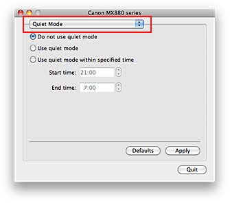

The procedure for using the quiet mode is as follows:
-
Select Quiet Mode from the pop-up menu on the Canon IJ Printer Utility
 -
Set the silent function
If necessary, select one of the following items:
- Do not use quiet mode
-
The operating noise is at normal volume.
- Use quiet mode
-
Select this option when you wish to reduce the operating noise.
- Use quiet mode within specified time
-
The operating noise can be reduced during a specified period of time.
Set the Start time and End time when you wish the quiet mode to be activated. Important
Important
-
The time specified in Start time and in End time must be different.
-
-
Apply the settings
Make sure that the machine is on and click Apply.
Click OK when the confirmation message appears.The settings are enabled hereafter.
-
Depending on the paper source or print quality settings, effects of the quiet mode may be less.